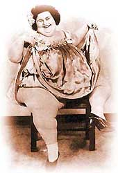

| Abundant
Beauty
by Alice Simpson

Dolly Dimples, Baby Thelma, Baby Ruth, Jolly Nellie, and other Circus
Fat Folks’ true life obsession with food was, like my own
obsession with clay, their deepest joy and the defining passion
of their lives. Many of us, men AND women, struggle with “hungers,”
yearnings for pleasures be it food, love, possessions, control,
power. Hunger, in all its metaphorical forms, is part of our personal
and public conversation.
A BRIEF HISTORY
Whether we approve or disapprove, Circus Fat Folk were part of
entertainment history. ABUNDANT BEAUTY, a sculptural series, explores
hunger and issues of appearance and identity through images of these
historical, professional performers at a time when obesity was a
sign of health and prosperity. Found serendipitously on the internet,
postcards, souvenirs from circus and carnival sideshows, many photographed
by Charles Eisenmann and then Frank Wendt from 1840 to 1930 inspire
my clay portraits.
|
|
|
 |
| Unknown Woman |
Baby Ruth |
Baby Thelma |
Dolly Dimples |
|
|
|
 |
“ ...Revealing of society a century ago, circus women
were displayed in a sexually titillating fashion and in erotically
charged scenarios, while at the same time being billed (with a big
wink) as examples of unblemished purity and domesticity.”
-- writes Dr. Janet Davis, “The Circus Age: Culture and
Society Under the American Big Top”, University of Texas.
Traveling carnivals, with Fat Folk as part of Freak Shows, provided
a source of entertainment and reflected the values, fears and issues
of society at large. When the circus came to town, people traveled
miles by wagon or train to see clowns, and trapeze artists, to marvel
at the exotic and terrifying animals and to peer at anomalies of
nature, like Siamese Twins, Mustached Ladies and Fat Folk.
Professional performers like Dolly Dimples Geyer, “The
Most Beautiful Fat Woman in the World, ” Baby Ruth
Pontico, “one of the fattest women ever to appear in the [Barnum
& Bailey ] circus” and Jollie Nellie Terrell ,
who appears in a cameo appearance in the film noir classic, ‘Nightmare
Alley’ with Tyrone Power, were happily married. Interviews
note that they loved their work, the companionship they found in
a haven from strict societal constraints, along with financial opportunities
within the carnival environment.
PROCESS
Each of my sculptural works was coil built, in white or brown
stoneware, with an awareness of the relationship of dainty hands
and feet to body mass, the provocative nature of their poses and
spirit of expression. It was a sensual experience to round enormous
juicy arms, sculpt deeply dimpled elbows, fashion ample thighs with
curves of fat over muscle and to persuade the distortion of each
face, hidden amidst its multitude of chins.
On AN UNKNOWN WOMAN, BABY THELMA, DOLLY DIMPLES and most others,
rutile oxide was brushed, then wiped off, to accentuate and add
a more complex expression. I sculpted their mouths open to imply
a voice of hunger beneath the playful facade. In keeping with my
handmade Artist Books, which incorporate text, I inscribe obscure
messages about hunger and longing. At the leather hard stage, sections
are cut, hollowed to approximately one quarter inch thickness and
reassembled with slip. In order to capture the character of tinted
photographs, a wash of whitened acrylic color barely identifies
a dress, corsage, hair bow or shoe after firing. BABY RUTH’s
portrait is a contrast between textured, flecked clay, flatness
of fish sauce and the sheen of glaze in her bow.
|
 |
| Jolly Nellie |
Alice from Dallas |
|
|
On JOLLIE NELLIE, one of a series of terra cotta
dinner plates, with a sgrafitto technique,
the drawing and text are scratched through a layer of slip with
a fine pin tool.
|
|
| DOLLY DIMPLES, a nonfunctional stoneware teapot
is topped with a generous slice of peach pie and has an iced
cupcake secreted in a surprise back shelf. |
 |
|
| MADAME X ON A VELVET STOOL is a work of the Muses--with
her inspired ‘do’ observed on a Broadway bus. The
expression of her hands echoes the tassels of the pillow, which
seems to fly away from her ample form. A Chippendale ottoman,
with mid 18th century cabriole legs and claw-and-ball feet,
seemed the perfect extension to her attitude. |
While not a Circus Fat Lady, TAMING THE GHOSTS was inspired
by a 1925 Folies Bergere program cover. The text, “Searching
to transcend its wounds by taming the ghosts of history,”
was arbitrarily selected from a review by Christopher Isherword
in the The NY Times. |
Developing works like the URBAN MOTION and ABUNDANT BEAUTY series
has been the antithesis of my early work as a fashion illustrator
and graphic designer, working with companies like Estee Lauder,
Revlon, Max Factor and Helena Rubenstein, as well as fashion magazines.
Despite a lifetime of drawing and painting the figure, clay is a
new medium. In this medium, I discover the bliss of making. I spent
more than a dozen years creating Artist Books about dance, until
2003, when I literally dreamed of working in clay and woke to that
new direction.
URBAN MOTION, inspired by Hip Hop, began that dream. In STREET
WISE (aka APOLLO) and THE THREE GRACES, mythological clay gods and
goddesses masquerade as street. The Graces, Thalia, Euphrosyne,
Aglaia, danced to the music of Apollo, symbolized all that was noble,
beautiful and pure. They presided over banquets, dances, and other
pleasurable social events, and brought joy to gods and mortals.
Like the Muses, they endowed artists and poets with the ability
to create works of art. Imagine meeting the young jazz musician,
who would pose for Thalia, (figure on the left) outside NY’s
Thalia Theater.
|
|
| STREET WISE (aka APOLLO) |
THE THREE GRACES |
It seems abundantly clear that my direction will continue to be
about theater, music, dance, performers and performance. As a daughter
of a renowned vaudeville eccentric dancer, the need to entertain
seems to be part of my gene pool. Within this realm, I search for
a darker, less conventional beauty, contradicting the mainstream,
hoping to occasionally challenge the norms of acceptance and comfort.
|
With an award-winning career in Graphic Design and illustration,
Simpson taught drawing, design and packaging at the Fashion
Institute of Technology, (F.I.T.) NY, School of Visual Arts,
NY, and Otis-Parsons, LA. She is the proud mother of three-time
Grammy nominee Michael Simpson, music producer (DustBrothers).
She lives in New York City. Simpson’s works are internationally
exhibited, in public and private collections including:
- Lincoln Center Library for the Performing Arts - Jerome
Robbins Dance Collection
- Lincoln Center Theater- Andre Bishop, Director
- The Victoria & Albert Museum
- Yale University
- Harvard University - Theater and Music Collection
- Dartmouth University
- Stanford University
For more information: www.alicesimpson.com.
|
Sculpture Photos: D.James Dee; Historical
images: David B. Denholtz, James Taylor, Karl Niedershuh at www.showhistory.com/The
Doghouse Collection & Syracuse University Library; Alice Simpson's
portrait: Rich Schmitt.
More Articles |


{kind=link}
{kind=link}
{kind=link}
{kind=link}
{kind=link}
{kind=link}
{kind=link}
{kind=link}
{kind=link}
{kind=link}
{kind=link}
{kind=link}
{kind=link}
{kind=link}
{kind=link}